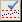
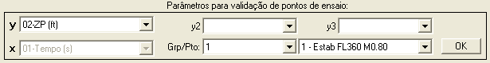
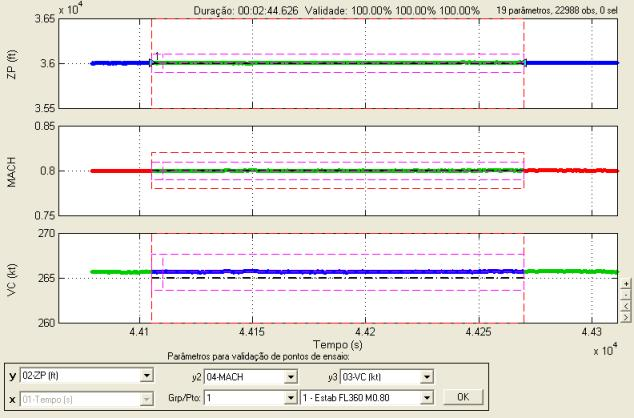
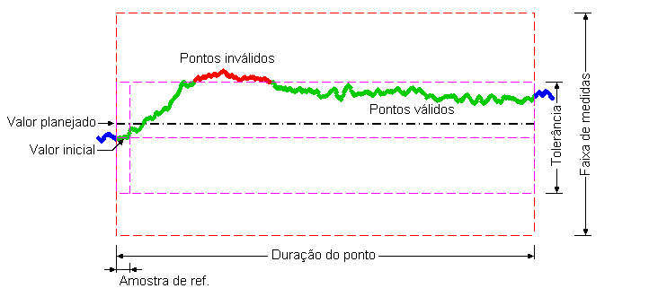
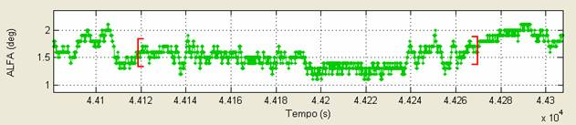
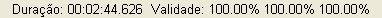
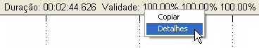
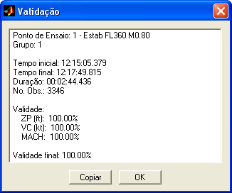
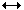
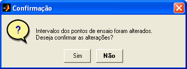

| Menu Ferramentas |
|
Essa função
permite verificar
visual e numericamente a validade dos parâmetros de interesse dos
pontos de
ensaio cadastrados na ferramenta
de edição de pontos de ensaio, e
também ajustar o intervalo dos pontos de ensaio de forma a adequá-lo às
tolerâncias.
Depois de
cadastrar os pontos, clique em “Ferramentas ►
Gerenciamento de pontos de ensaio ...
► Validação
dos ponto de ensaio” ou no botão 
A Caixa de
Diálogo solicitará que o usuário indique os
parâmetros para a validação:

● O campo “x”
será alterado automaticamente para o
tempo de referência e não poderá ser alterado.
● Nos campos “y”, “y2” e “y3”, selecione até três parâmetros para validação. A janela será subdividida em até três gráficos para apresentação dos parâmetros individualmente. Os parâmetros que tiverem dados de validação cadastrados serão precedidos por um asterisco nas listas.
● Nos campos “Grp/Pto”,
indique o grupo e o ponto de ensaio que deseja
analisar. A abscissa será ajustada automaticamente para mostrar o ponto
selecionado.

Enquanto a
função estiver ativada, não será possível
realizar as operações do R_DAT. Clique no botão “OK” para
prosseguir/desativar
a função. As funções de zoom e movimentação dos gráficos continuarão
funcionando normalmente.
Validação
Quando um dos parâmetros selecionados tiver dados de validação cadastrados, serão apresentadas graficamente as regiões de validação do parâmetro.
As observações que estiverem dentro da faixa de medidas e tolerância serão apresentadas em verde (ou azul, caso a cor do plote seja verde);
As observações
que estiverem fora da
faixa de medidas e/ou tolerância
serão apresentadas em vermelho (ou magenta,
caso a cor do plote
seja vermelho).
Os seguintes
conceitos são definidos:
|
Conceito |
Descrição |
|
Valor Planejado |
Valor do
parâmetro planejado para a execução do ponto. |
|
Faixa de Medidas |
Faixa ao redor
do valor planejado em que o ponto pode ser realizado. |
|
Tolerância |
Faixa ao redor
do valor inicial em que o parâmetro pode variar. |
|
Amostra de
Referência |
Intervalo de
tempo após o início do ponto cuja média fornece o valor inicial do
parâmetro, usado como referência para o decorrer do ponto de ensaio. |
A figura abaixo
apresenta graficamente as áreas de
validação:

Quando não
houver dados de validação cadastrados para o parâmetro
selecionado, não serão apresentadas as regiões de validação do
parâmetro. O
ponto de ensaio será delimitado por colchetes vermelhos, como no
exemplo
abaixo:

Na parte
superior do gráfico, serão apresentadas as
seguintes informações:
- Duração do ponto
selecionado no formato HH:MM:SS.MS;
- Validade dos
parâmetros selecionados.

A validade de
cada parâmetro é fornecida como o percentual
de observações dentro da tolerância e da faixa de medidas.
Os valores
necessários o cômputo de cada critério são:
|
Critério |
Valores
Necessários |
Intervalo de
Validade (inclui os
limites) |
|
Faixa de Medidas |
Valor planejado
e variação inferior e superior da faixa de medidas |
Valor planejado
± Variação da faixa de medidas |
|
Tolerância |
Amostra de
referência e tolerâncias inferior e superior |
Valor inicial ±
Tolerâncias |
Os critérios de
validação são independentes, ou seja, é
possível considerar apenas um ou outro critério, de acordo com os
valores
inseridos pelo usuário.
Menu das
Informações de Validação
Ao clicar com o
botão direito do mouse sobre as informações
de validação, surgirá um menu
com as opções “Copiar” e
“Detalhes”.

- Copiar: Ao clicar nessa
opção as informações serão copiadas
como texto para a Área de Transferência do Windows, de onde podem ser
coladas
em qualquer aplicativo editor de texto.
- Detalhes: Ao clicar nessa
opção será
apresentada uma janela com os detalhes da validação. Serão apresentados:
-
Número e
descrição do ponto;
-
Grupo;
-
Tempo inicial;
-
Tempo final;
-
Duração;
-
Número de
observações (tamanho da amostra);
-
Validade de
cada parâmetro de interesse; e
-
Validade geral
do ponto (intercessão da validade de todos os parâmetros cadastrados).
Exemplo:

O botão
“Copiar” copia os detalhes da validação para a Área
de Transferência do Windows e o botão “OK” fecha a janela.
Alteração
Para alterar o
intervalo do ponto de ensaio selecionado, use
o mouse para arrastar as laterais das áreas de validação ou os
colchetes
delimitadores.
Ao posicionar o
cursor sobre as “bordas” do ponto de ensaio
o mesmo será apresentado como uma seta dupla horizontal: 
As informações
apresentadas na parte superior do gráfico
(duração e validade) serão atualizadas automaticamente à medida que o
intervalo
do ponto é alterado com o mouse, permitindo ajustar sua duração e adequá-lo às tolerâncias especificadas.
Para sair da
função, clique no botão “OK”.
Caso alguma
alteração tenha sido realizada, o usuário deve
confirmar se deseja mantê-las ou descartá-las:

Ao clicar
“Sim”, as alterações serão implementadas.
| |
Definir
seleção como ponto de ensaio |
Visualização
dos ajustes de curva |
|